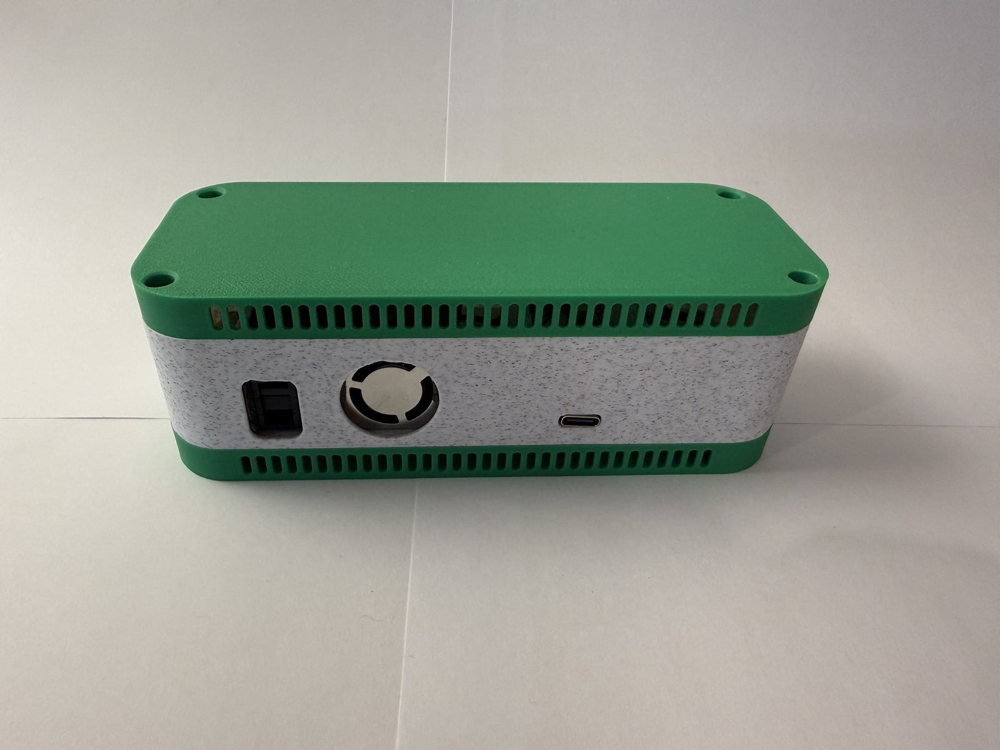
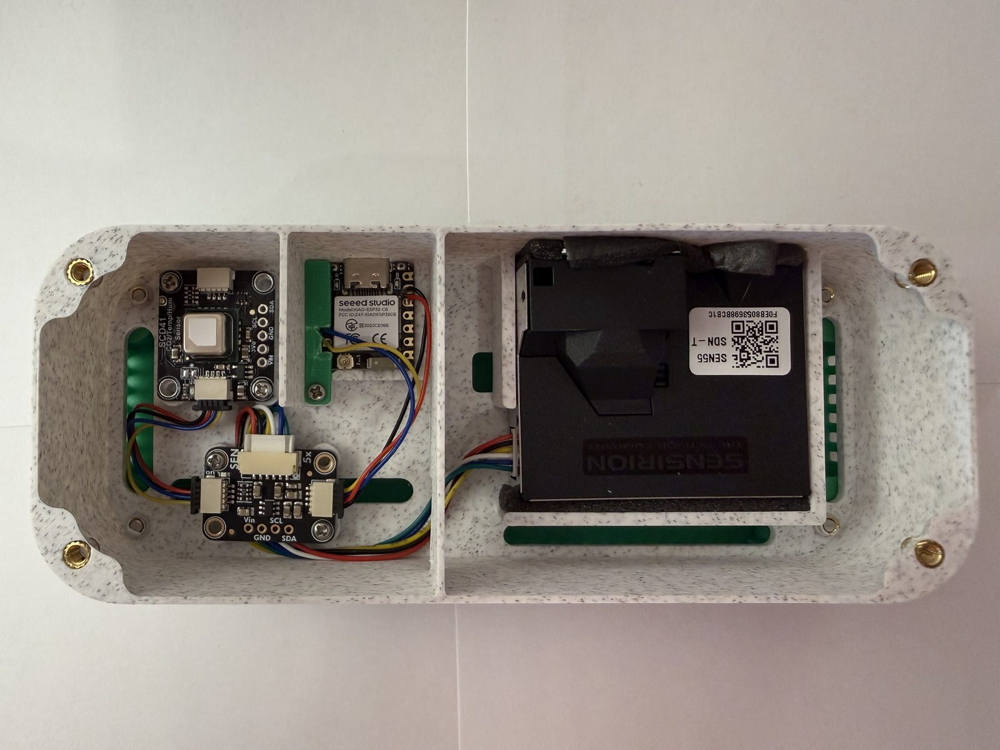
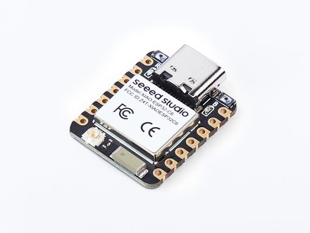
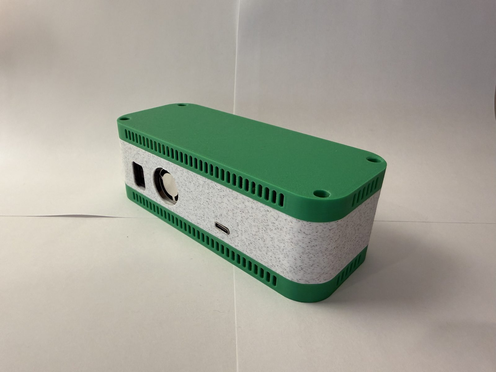
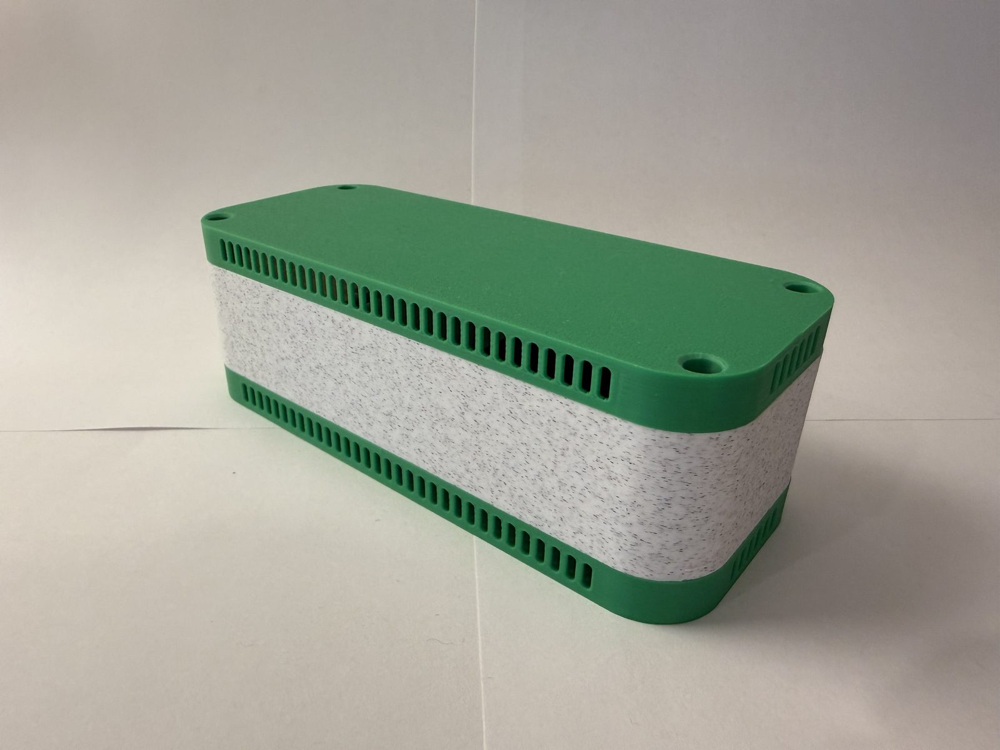

Air Quality Monitor V2

Overview
Generation 1 taught me a lot about what actually matters in an indoor air monitor. The SGP30's eCO2 estimate was neat, but at the end of the day it was still a guess. The PMSA003I had an 8000 hour duty cycle hanging over its head. And the whole Mosquitto, Node-RED, InfluxDB, Grafana pipeline on the Raspberry Pi was a lot of babysitting for one little sensor. So when I sat down to design the second generation, I went right back to the wishlist I had written at the end of the first write-up: a true CO2 sensor, a Sensirion SEN environmental node, and real C++ instead of CircuitPython. Generation 2 checks every box.
At the center of this build is the SEN55, which handles particulate matter along with VOC and NOx indices, temperature, and humidity. Next to it sits an SCD41 for a genuine CO2 measurement. Both hang off of a Seeed Studio XIAO ESP32-C6 — a five dollar microcontroller — programmed with ESPHome and reporting straight into Home Assistant. No broker, no database server, no separate dashboard container. Just the sensor, the board, and Home Assistant.
Components
SEN55

I picked the SEN55 from Sensirion to be the heart of this build. In one package it measures particulate matter in four size bins (PM1.0, PM2.5, PM4, and PM10), a VOC index, a NOx index, temperature, and humidity, all over I2C. Per the datasheet it holds a ±10% accuracy on the particulate mass concentrations, ±0.45 °C on temperature, ±4.5 %RH on humidity, and a rated lifetime of more than ten years — which is a whole lot more reassuring than the first generation's 8000 hour sensor. The integrated fan keeps room air moving across the laser optics, and the sensor runs automatic cleaning routines so the readings stay honest over the long haul.
Mounting matters with this sensor. I spent time with the SEN5x datasheet and Sensirion's engineering guidelines to work out the optimal orientation and position so that the fan inlet and outlet both have an unobstructed path to room air, and the official STEP file made it easy to build the case around the exact envelope of the module.
SCD41
The SCD41 is the true CO2 sensor I wished for in the first generation's write-up. It uses a photoacoustic NDIR principle to actually measure carbon dioxide instead of estimating it off of VOC readings, with an accuracy of ±(40 ppm + 5% of the reading) over a 400 to 5000 ppm range per the datasheet. It also has its own temperature and humidity sensors built right in, so I ended up with a second reference for those channels basically for free. I left automatic self-calibration enabled: the sensor assumes the lowest CO2 reading it sees over the course of about a week is fresh outdoor air and quietly re-zeroes itself to it, which keeps the whole thing honest without me ever touching it.
Seeed Studio XIAO ESP32-C6

For the brain of the operation, I went with the Seeed Studio XIAO ESP32-C6. For five dollars you get an ESP32-C6 with 2.4 GHz WiFi and a USB-C port — compare that to the eighteen dollar Feather in Generation 1 and the microcontroller became one of the cheapest parts of the whole build. There is plenty of headroom on it for a sensor loop, and it sips power compared to the old board.
Assembly took very limited soldering. A small SEN55 adapter breakout converts the sensor's tiny 1.0 mm JST connector to the STEMMA QT standard, and on the other end I soldered the small JST STEMMA connector to the XIAO to adapt it to the I2C bus. A couple of short STEMMA QT cables chain the SEN55, the SCD41, and the XIAO together. The whole monitor is powered from the XIAO's USB-C port.
Programming
After the CircuitPython detour of the first generation, I wanted the firmware for this build to be boring. ESPHome delivers exactly that. The entire configuration lives in a single YAML file: the SEN5x and SCD4x sensor platforms are built into ESPHome, so I never wrote a line of sensor driver code. I simply declared the sensors, gave them names, and set the update interval to 300 seconds.
Moving to Home Assistant was about more than just this one sensor, though. I was adding a whole suite of sensors around the house, and I wanted everything reporting to one place. ESPHome lets me build my own sensors and have them show up in Home Assistant without having to manage an entire stack of brokers, databases, and dashboard containers the way Generation 1 did. It is just Home Assistant now, and every device I add after this one gets the same treatment for free. Over-the-air updates, a fallback captive portal, and the encrypted Home Assistant API all come with the framework too.
The VOC and NOx indices needed a little tuning to behave. The VOC algorithm has learning windows, a gating duration, and a gain factor that control how fast the index adapts to the environment, and I settled on values that keep the index stable in a quiet house while still responding to actual events like cooking or cleaning.
Show the ESPHome configuration
# AQM Generation 2 - ESPHome configuration (redacted)
# Device: Seeed Studio XIAO ESP32-C6 with Sensirion SEN55 + SCD41
# NOTE: api/OTA/fallback-hotspot credentials are redacted. Generate your own.
esphome:
name: xiao-esp32-c6
friendly_name: HAQ - SEN55x
esp32:
board: seeed_xiao_esp32c6
framework:
type: esp-idf
# Enable logging
logger:
# Enable Home Assistant API
api:
encryption:
key: "<REDACTED>"
# Example configuration entry for ESP32
i2c:
sda: GPIO22
scl: GPIO23
scan: true
id: bus_a
ota:
- platform: esphome
password: "<REDACTED>"
wifi:
ssid: !secret wifi_ssid
password: !secret wifi_password
# Enable fallback hotspot (captive portal) in case wifi connection fails
ap:
ssid: "Xiao-Esp32-C6 Fallback Hotspot"
password: "<REDACTED>"
captive_portal:
output:
- platform: gpio
pin: GPIO15
id: led_gpio
# Keep inverted: true as this is the common setup for XIAO USER LEDs
inverted: true
# 💡 2. Define the switch component that controls the output
switch:
- platform: output
name: "Xiao C6 User Switch"
output: led_gpio
icon: "mdi:led-strip-variant"
sensor:
- platform: scd4x
co2:
name: "CO2_scd41"
temperature:
name: "temperature_scd41"
humidity:
name: "humidty_scd41"
temperature_offset: 4 # default
measurement_mode: low_power_periodic # measurement is taken every 30 seconds
automatic_self_calibration: true
# ambient_pressure_compensation_source:
i2c_id: bus_a
update_interval: 300s
- platform: sen5x
id: sen54
pm_1_0:
name: " PM <1µm Weight concentration"
id: pm_1_0
accuracy_decimals: 1
pm_2_5:
name: " PM <2.5µm Weight concentration"
id: pm_2_5
accuracy_decimals: 1
pm_4_0:
name: " PM <4µm Weight concentration"
id: pm_4_0
accuracy_decimals: 1
pm_10_0:
name: " PM <10µm Weight concentration"
id: pm_10_0
accuracy_decimals: 1
temperature:
name: "temperature_SEN55"
accuracy_decimals: 1
humidity:
name: "humidity_SEN55"
accuracy_decimals: 0
voc_index:
name: "VOC_SEN55"
algorithm_tuning:
index_offset: 100
learning_time_offset_hours: 12
learning_time_gain_hours: 12
gating_max_duration_minutes: 180
std_initial: 50
gain_factor: 230
nox_index:
name: "NOX_SEN55"
algorithm_tuning:
index_offset: 1
learning_time_offset_hours: 12
learning_time_gain_hours: 12
gating_max_duration_minutes: 180
std_initial: 50
gain_factor: 230
temperature_compensation:
offset: 0
normalized_offset_slope: 0
time_constant: 0
acceleration_mode: low
store_baseline: true
address: 0x69
i2c_id: bus_a
update_interval: 300s
# Add this section to create the reset entity
button:
- platform: restart
name: "Xiao C6 Software Restart"
entity_category: config # Hides the entity by default, as it's a configuration tool
icon: "mdi:restart"
Case Design


The Generation 2 case was designed in CAD around the STEP models of both sensors. The whole package measures 150 x 60 x 30 mm — a slim little box that keeps the fan inlet and exhaust of the SEN55 open to room air while the electronics stay tucked away inside. The case is printed in three pieces: a body, a top, and a bottom, held together with heat-set inserts and M3 hardware. The vents in the case give the temperature, humidity, and CO2 sensors plenty of passive airflow so they track the room instead of the inside of a box.
The full model is available to view interactively right in the browser, along with the files used to print it:
Bill of Materials
| Name | Description | Quantity | Price |
|---|---|---|---|
| SEN55-SDN-T | Air quality sensor with I2C output from Sensirion | 1 | $30.00 |
| SCD41 | True CO2, temperature, and humidity sensor with I2C output | 1 | $50.00 |
| Seeed Studio XIAO ESP32-C6 | Microcontroller | 1 | $5.00 |
| SEN55 Adapter Breakout | Adapts the SEN55 connections to I2C via STEMMA QT / Qwiic | 1 | $4.50 |
| STEMMA QT / Qwiic JST SH 4-pin Cable | Connector cable | 2 | $1.00 |
| $91.50 | |||